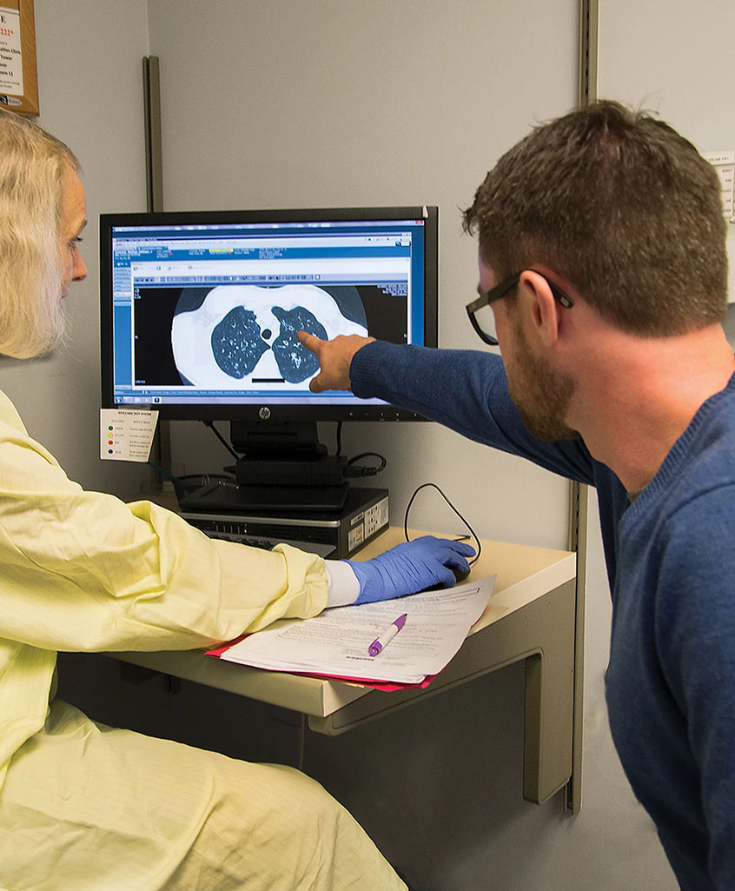

Take on Transplant
Explore stories from people living with cystic fibrosis (CF) as they share their experiences with lung transplant.
Explore stories from people living with cystic fibrosis (CF) as they share their experiences with lung transplant.
Find medical information, facts, and helpful resources as you consider lung transplant for yourself or as a caregiver.
Read questions about lung transplant and answers provided by people with CF who have undergone lung transplant, in their own words.
Lung transplant is a treatment option for advanced cystic fibrosis (CF) and has the potential to improve quality of life and extend a person's life by a decade or more. In the US, after reaching an FEV1 < 30% an equal number of people with CF die each year as undergo lung transplant. More than half of CF patients who die without transplant were never referred for lung transplant.
Our research shows that there are opportunities to help people with CF feel more prepared to discuss transplant as a treatment option. A survey demonstrated a gap between how prepared patients feel and how prepared they want to feel about lung transplant decisions. Knowledge gaps were identified related to survival benefit, improvements in health-related quality of life, and contraindications to lung transplant.
We developed this website with you in mind. We worked closely with people living with CF, including individuals who have undergone lung transplant and people who decided not to have a lung transplant. We interviewed more than 50 people with CF to better understand their journeys and what could have made their experiences better and transitions easier. This website was developed with the help of their insights and suggestions. We also interviewed caregivers for people with CF and incorporated information about support during the transition to transplant.
Content found in the site activities has been vetted by CF and lung transplant physicians as well as patients. The medical information includes recommendations supported by Cystic Fibrosis Foundation guidelines. The details you will find include the most up-to-date information available, which will provide you with tools to help in having informed discussions about lung transplant with your CF team.
Take on Transplant is sponsored by grants from the Cystic Fibrosis Foundation and the National Institutes of Health. Our research team is located at the University of Washington (in Seattle, WA) and includes CF and lung transplant physicians, researchers with experience in CF and lung transplant, and clinical informatics experts. Dr. Ramos was the lead author of the CF Foundation’s lung transplant referral guidelines. Dr. Kapnadak was the lead author of the CF Foundation’s guidelines for the care of individuals with advanced CF. Our research team has authored multiple scientific papers describing outcomes for people with advanced CF and those who undergo lung transplant.
Project Team
Dr. Kathleen Ramos
Dr. Siddhartha Kapnadak
Dr. Andrea L Hartzler
Lauren Bartlett
Mara R Hobler
Nick Reid
Dr. William Lober
Justin McReynolds
Amy Chen
Sierramatice Karras

